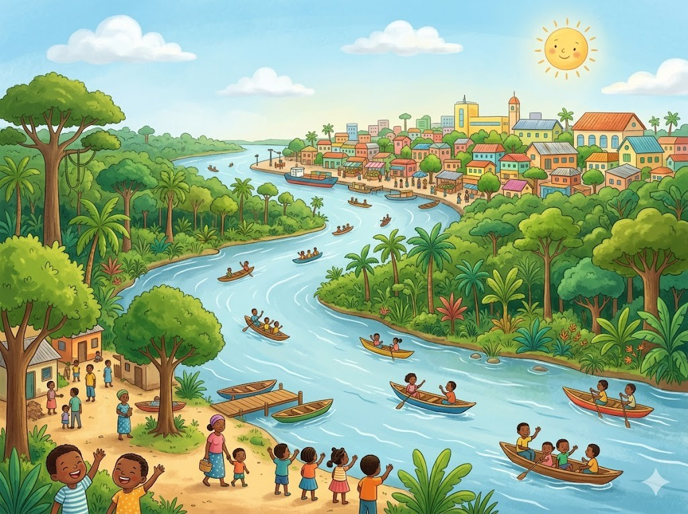
Hier stehen die wichtigsten Daten zu deinem Land. In der App baust du daraus deinen eigenen Steckbrief.
| Hauptstadt | Kinshasa |
| Kontinent | Afrika |
| Sprache | Französisch und mehrere Landessprachen |
| Währung | Kongo-Franc |
| Einwohner | rund 100 Millionen Menschen |
| Fläche | rund 2,3 Millionen km² |
| Großer Berg | Pic Marguerite im Ruwenzori-Gebirge, rund 5.100 m |
| Nachbarländer | Kongo, Zentralafrikanische Republik, Südsudan, Uganda, Ruanda, Burundi, Tansania, Sambia und Angola |
In DR Kongo gibt es viele berühmte Orte. Diese vier solltest du kennen.
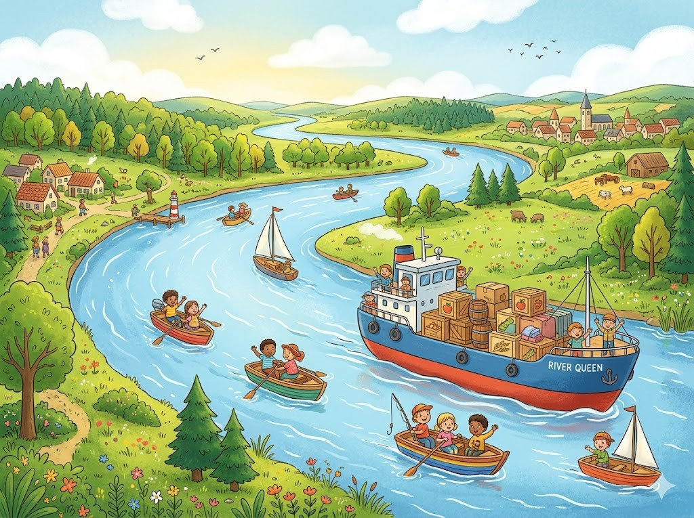
Der Kongo-FlussDer Kongo ist ein riesiger Fluss. Er fließt quer durch das ganze Land. Auf dem Wasser fahren viele Boote und große Schiffe. Sie bringen Menschen und Waren von Ort zu Ort. Der Kongo ist einer der mächtigsten Flüsse der Welt.
Grüne Wörter für die AppKongoriesiger FlussBooteWarenmächtigsten Flüsse
Der RegenwaldEin großer Teil des Landes ist mit Regenwald bedeckt. Dort wachsen sehr hohe Bäume dicht nebeneinander. Es ist warm und feucht und es regnet oft. Im Regenwald leben unzählige Tiere und Pflanzen. Dieser Wald ist einer der größten der Welt.
Grüne Wörter für die AppRegenwaldhohe Bäumewarm und feuchtTiere und Pflanzender größten der Welt
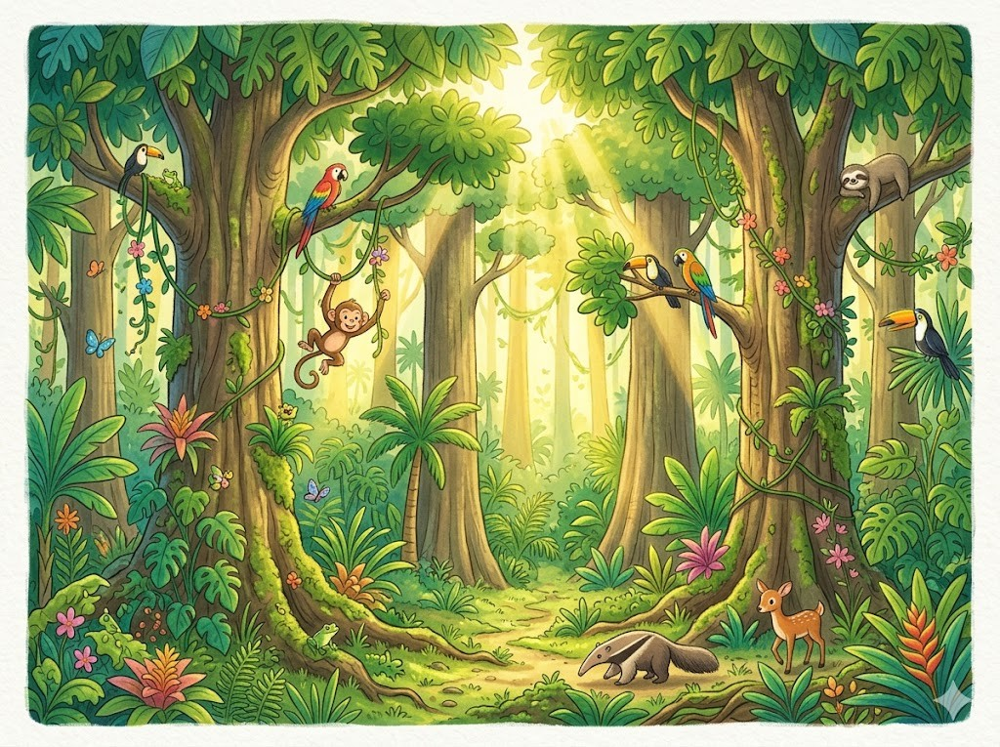
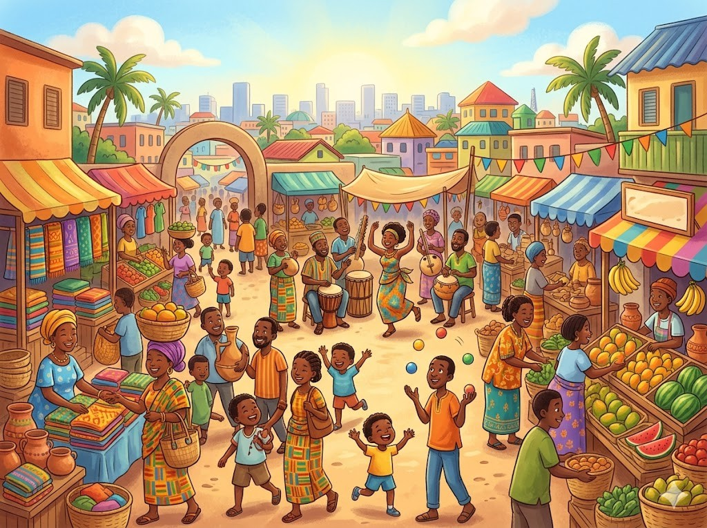
Die Hauptstadt KinshasaKinshasa ist die Hauptstadt von DR Kongo. Hier leben sehr viele Menschen dicht beisammen. Die Stadt ist laut und voller Leben. Auf den Märkten wird gehandelt und Musik gespielt. Kinshasa ist eine der größten Städte in Afrika.
Grüne Wörter für die AppKinshasaHauptstadtvoller LebenMärktengrößten Städte in Afrika
Die Virunga-BergeIm Osten des Landes liegen die Virunga-Berge. Manche dieser Berge sind Vulkane. Aus einem Vulkan steigt oft heißer Rauch auf. An den grünen Hängen leben seltene Berggorillas. Viele Menschen reisen her, um sie zu sehen.
Grüne Wörter für die AppVirunga-BergeVulkaneheißer RauchBerggorillasgrünen Hängen
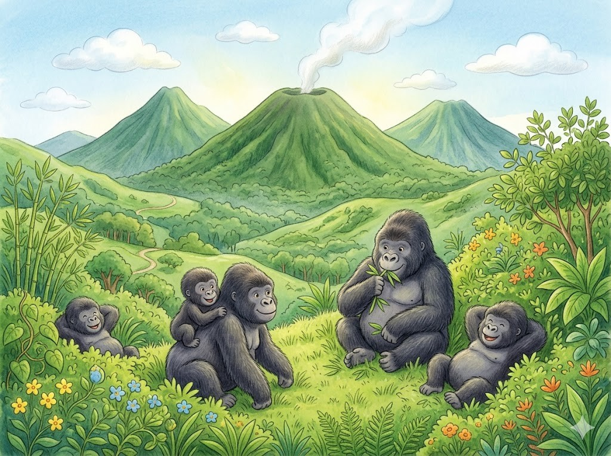
Diese Tiere leben in DR Kongo und sind ganz besonders.
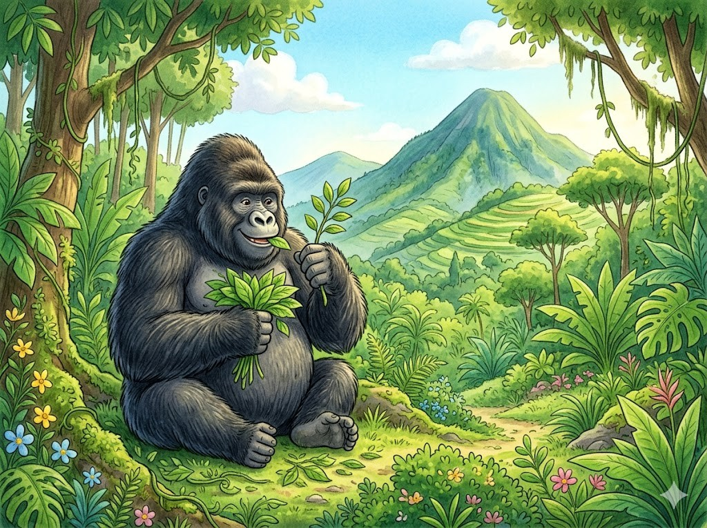
Der BerggorillaDer Berggorilla ist ein sehr großer Affe. Er lebt in den Bergen im grünen Wald. Gorillas sind stark, aber meist friedlich. Sie fressen vor allem Blätter und Pflanzen. Auf der ganzen Welt gibt es nur noch wenige Berggorillas.
Grüne Wörter für die AppBerggorillagroßer Affeim grünen WaldBlätter und Pflanzennur noch wenige
Das OkapiDas Okapi lebt nur im Regenwald von DR Kongo. Es sieht ein bisschen aus wie ein Pferd. An den Beinen hat es weiße Streifen wie ein Zebra. Mit seiner langen Zunge zupft es Blätter ab. Lange wusste niemand, dass es dieses scheue Tier gibt.
Grüne Wörter für die AppOkapiwie ein Pferdweiße Streifenlangen Zungescheue Tier
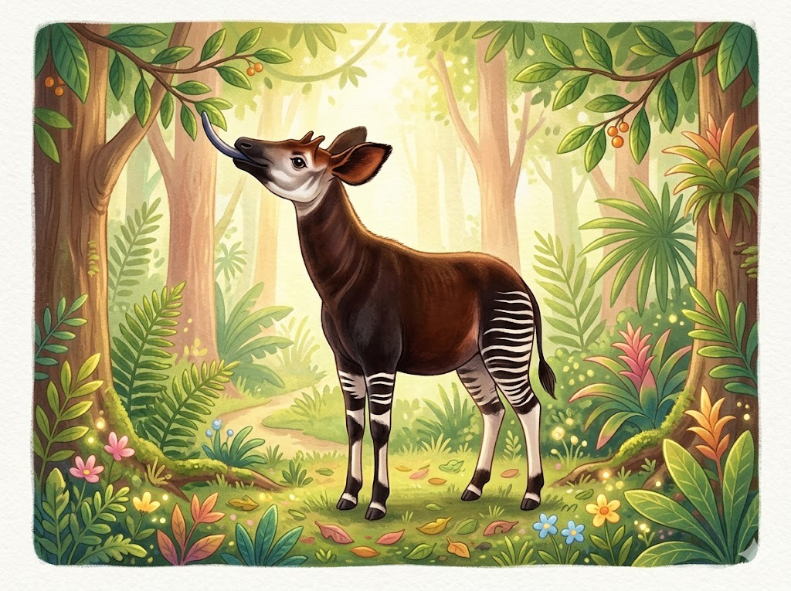
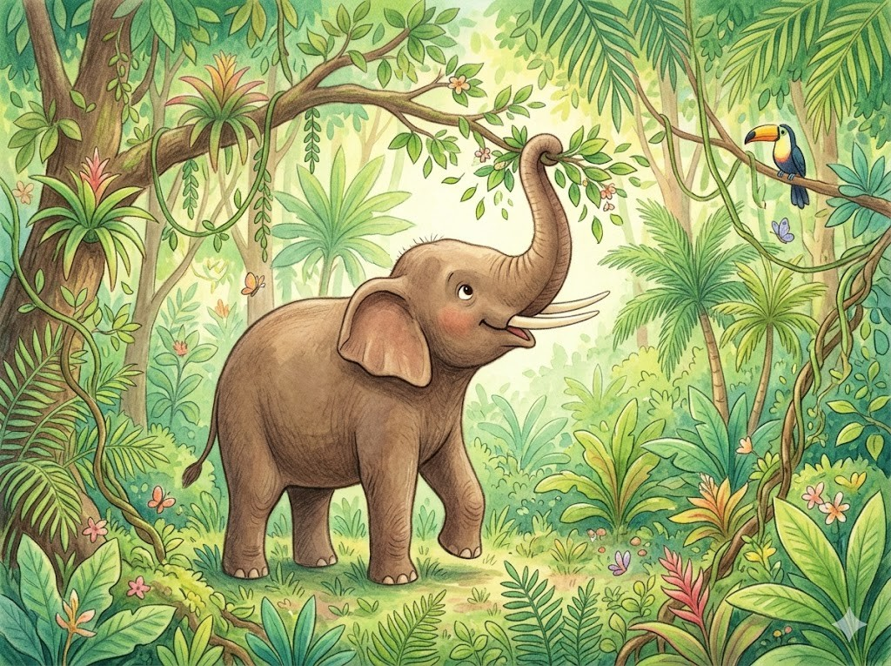
Der WaldelefantIm Regenwald lebt der Waldelefant. Er ist kleiner als der Elefant in der Steppe. Mit seinem Rüssel reißt er Äste und Blätter ab. Seine Stoßzähne sind gerade und dünn. Waldelefanten ziehen in kleinen Gruppen durch den Wald.
Grüne Wörter für die AppWaldelefantkleinerRüsselStoßzähnekleinen Gruppen
In der App kannst du beim Essen das Foto nehmen oder dein Gericht selbst malen.
FufuFufu ist ein wichtiges Essen im Kongo. Es ist ein weicher Brei aus Maniok oder Mais. Man formt daraus kleine Kugeln mit der Hand. Die Kugeln tunkt man in eine Soße. Fufu macht satt und schmeckt zu vielen Gerichten.
Grüne Wörter für die AppFufuweicher BreiManiokKugelnSoße
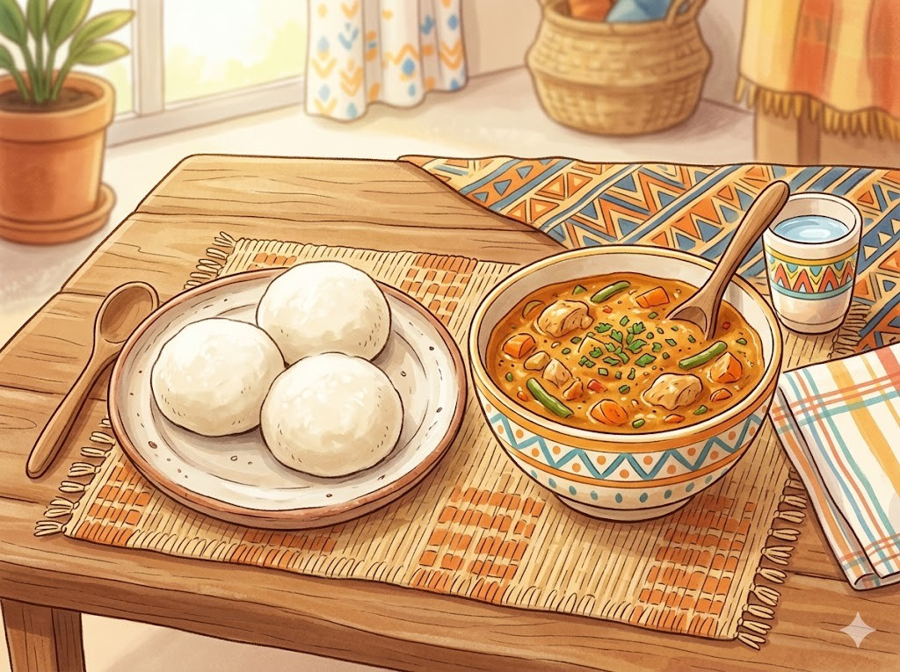
Maniok-BlätterAus den Blättern der Maniok-Pflanze kocht man ein grünes Gericht. Die Blätter werden klein zerstampft. Dann kocht man sie lange mit Öl und Gewürzen weich. Oft isst man dazu Reis oder Fufu. Dieses Gericht heißt Pondu.
Grüne Wörter für die AppManiok-Pflanzegrünes GerichtzerstampftReis oder FufuPondu
Gegrillter FischAus dem Kongo-Fluss kommen viele Fische. Die Menschen fangen sie mit Netzen und Booten. Frisch wird der Fisch über dem Feuer gegrillt. Dazu isst man oft Bananen oder Reis. Gegrillter Fisch ist eine beliebte Mahlzeit.
Grüne Wörter für die AppFischeNetzenüber dem Feuer gegrilltBananen oder Reisbeliebte Mahlzeit
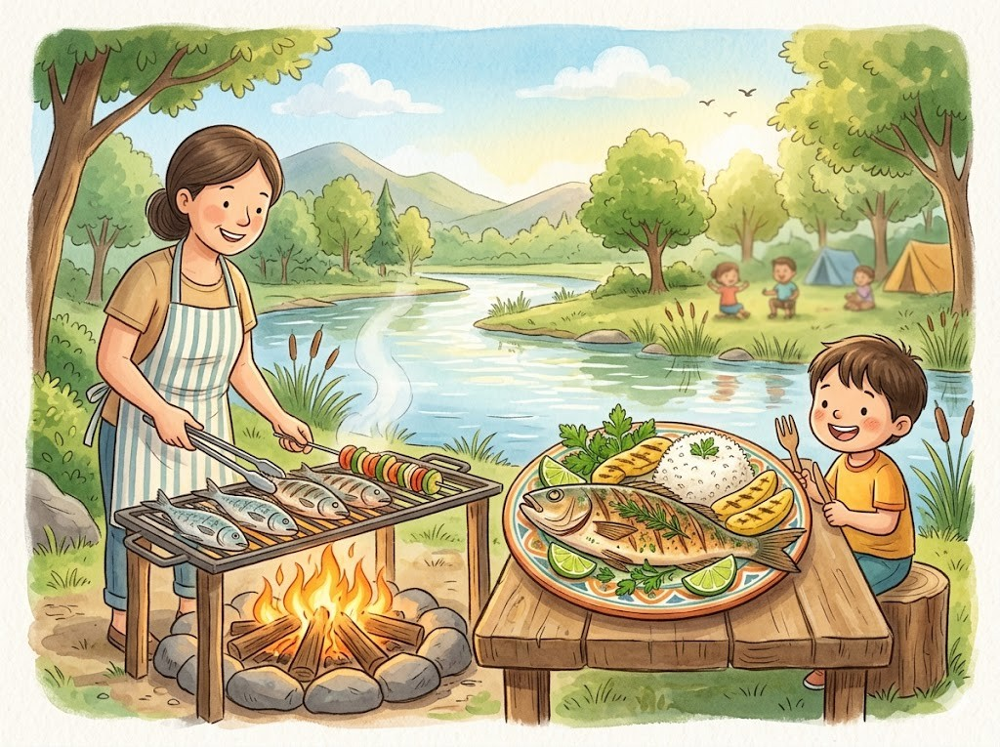
Die Nationalmannschaft von DR Kongo heißt die Leoparden. Erst spät hat sich das Team für die WM 2026 qualifiziert. Im letzten Spiel gewann es knapp gegen Jamaika. Ein bekannter Spieler ist Yoane Wissa. Er spielt in England bei Newcastle United.
Grüne Wörter für die Appdie LeopardenWM 2026gegen JamaikaYoane WissaNewcastle United
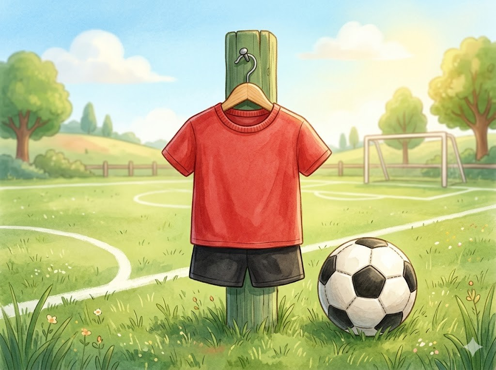
In der SchuleViele Kinder im Kongo gehen zur Schule. Dort lernen sie auf Französisch lesen und rechnen. Oft sind die Klassen sehr groß. Nach der Schule helfen die Kinder zu Hause mit. Manche tragen Wasser oder passen auf jüngere Geschwister auf.
Grüne Wörter für die AppSchuleFranzösischKlassen sehr großhelfen die Kinderjüngere Geschwister
Musik und SpielIm Kongo ist Musik überall zu hören. Die Kinder tanzen gern und klatschen im Takt. Am liebsten spielen sie aber Fußball. Aus alten Stoffresten basteln sie sich manchmal selbst einen Ball. Dann wird auf der Straße zusammen gespielt.
Grüne Wörter für die AppMusiktanzen gernFußballselbst einen Ballauf der Straße
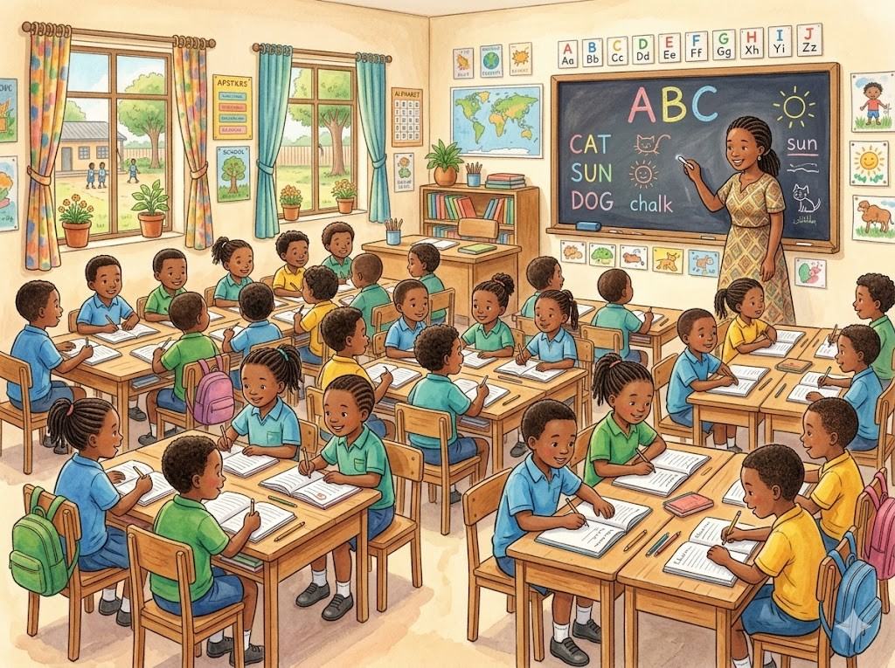